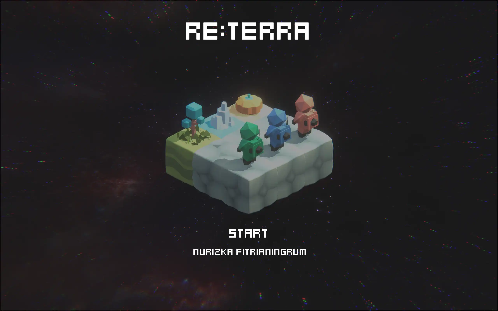
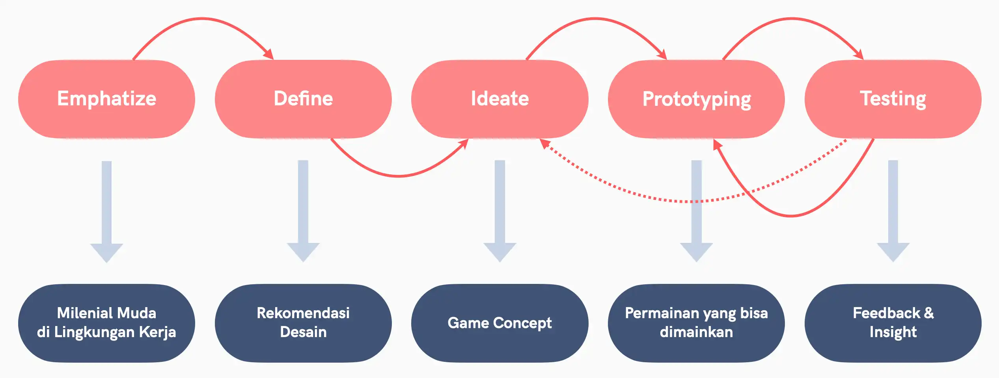
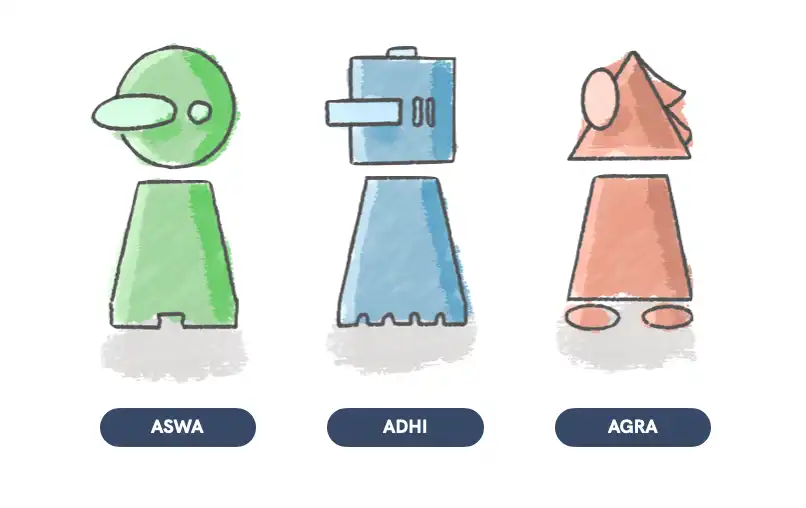
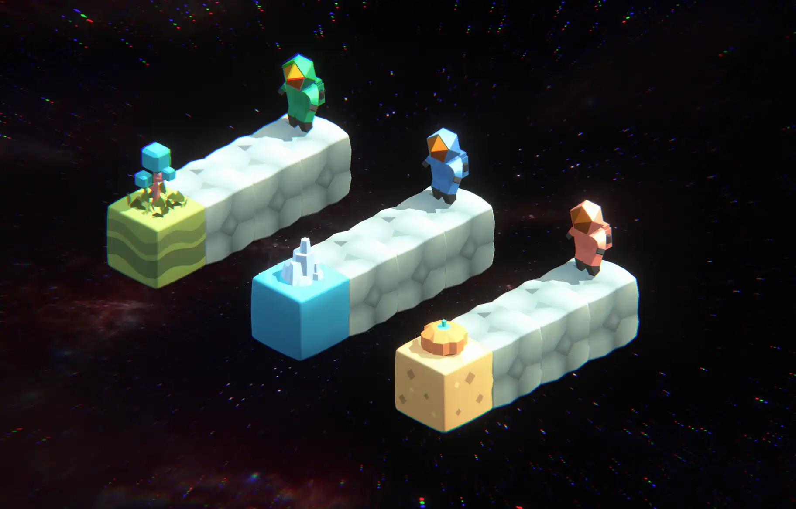
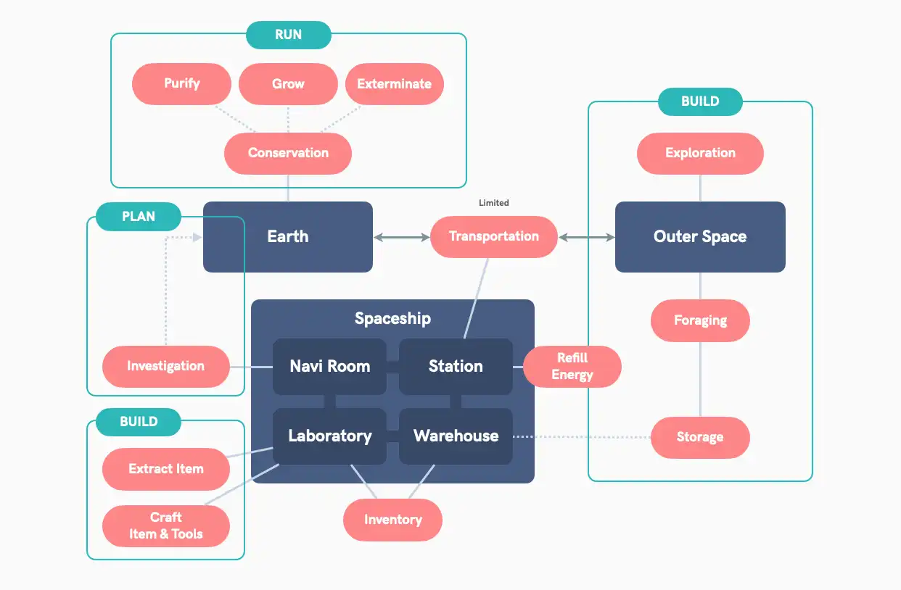
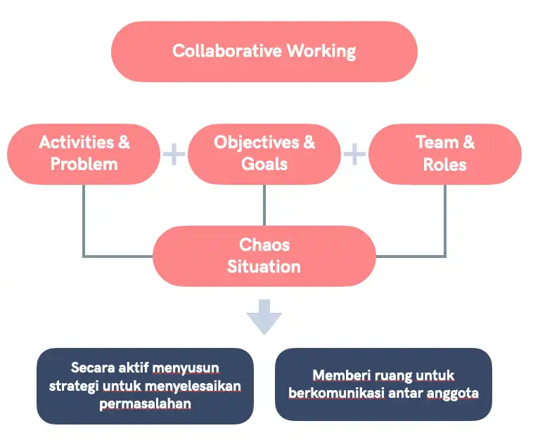
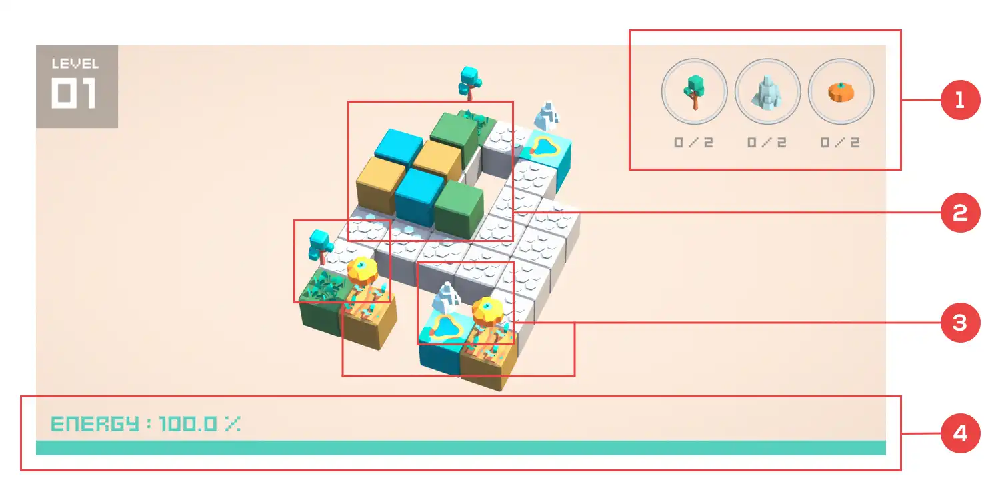
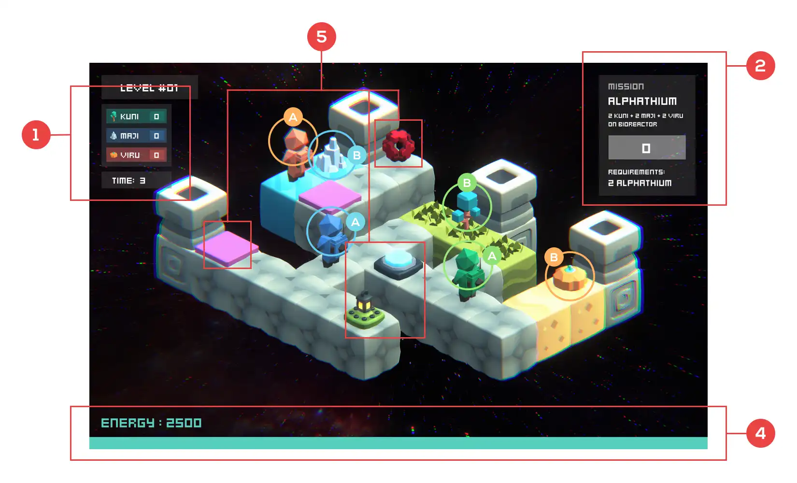

Re:TERRA
Game project for Master Thesis for helping people learn Collaborative Work.
- Category
- Interactive Media
- Period
- 2020
- Role
- Interactive media designer
- Tools
- Unity
Project Overview
Re:Terra is a digital simulation game designed to explore and habituate collaborative working among young millennials aged 20--28.

The project responds to a workplace context where young millennials are comfortable with digital technology and often have strong individual hard skills, while collaborative working can still be challenging. The research explored how a digital game could represent collaborative work without relying on competition.
The project used Design Thinking as its main design approach:

- Empathize
- Define
- Ideate
- Prototyping
- Testing
The prototype was evaluated through observation, UEQ-S (User Experience Questionnaire -- Short Version), and Focus Group Discussion (FGD).
The Challenge
The research identified a tension in the way young millennials approach work.
They value colleagues who collaborate well, but they may also prefer working independently and believe they can complete tasks on their own. At the same time, they are highly adaptive to digital technology and value opportunities to continuously develop their capabilities.
The project therefore explored a way to let people experience collaborative work in a low-risk simulated environment, where mistakes could happen without the consequences of a real workplace.
This led to two central research questions:
- What collaborative-work simulation model is appropriate for young millennials?
- How can a digital game represent collaborative working?
Research & Design Approach
Empathize
The research examined the characteristics, expectations, and working tendencies of young millennials aged 20--28.
Key findings included:
- Strong familiarity with digital technology.
- Relatively strong hard skills.
- A desire to continuously develop capabilities.
- A preference for colleagues who collaborate well.
- A tendency to work independently.
- A dislike of excessive guidance.
- A need to have their ideas and contributions recognized.
- An interest in experiences and opportunities for skill development.
- Concern about environmental issues such as climate change and global warming.
These findings informed both the collaboration mechanics and the game's environmental theme.
Define
The research compared several multiplayer games to understand how existing games create collaboration:
- Forbidden Desert
- Overcooked 2
- Ragnarok M: Eternal Love
The comparison identified several design principles for a collaborative simulation:
- A shared objective should be central to the experience.
- Winning should reward the whole group rather than an individual player.
- Losing should create a shared consequence rather than blame one player.
- Each role should provide capabilities that are difficult to replace.
- Every player should have meaningful work to contribute.
- Players should have room to communicate and coordinate.
- Multiple solution paths should be possible.
- The game should remain simple enough to understand while introducing tension and disorder.
- A shared point of view can help maintain team focus.
- The recommended player count was approximately 3--6 players.
The research also introduced Plan--Build--Run--Monitor (PBRM) as a workplace-inspired structure for collaborative activities.
The Game Concept
Re:Terra
The game takes place around a damaged Earth that has become nearly uninhabitable because of human exploitation.
Players become Caraka, a group traveling through space to collect life resources called Samani and use them to create Aksata, orbs used to restore Earth.
The name Re:Terra combines:
- Re --- back / again
- Terra --- Earth
The concept therefore centers on restoring Earth rather than defeating another player or team.
Shared Objective
All players work toward the same goal:
Restore damaged Earth to a habitable state.
The shared structure deliberately avoids competition between players.
- Win: Restore the targeted areas of Earth.
- Lose: Caraka resources are exhausted and cannot be restored or created.
Three Distinct Roles
Each player controls a different Caraka role. The roles have different abilities so players need to rely on one another.
| Role | Element | Ability | Primary Function |
|---|---|---|---|
| Aswa-ka | Air | Appraise | Identify hidden Navigate or unknown objects/areas and change the viewing position |
| Adhi-ka | Water | Operate, Build | Operate machines Repair and build or repair objects |
| Agra-ka | Fire | Warp, Jump, Glide | Change position, reach inaccessible areas, and cross dangerous areas |


Players also share common abilities:
- Move
- Push-and-Pull
- Elemental Shoot
- Pick-and-Drop
The roles are intentionally interdependent. A player may not perform the same amount of visible work as another player, but their unique ability can still be essential to the team's progress.
Collaborative Gameplay Structure

The game was structured around a series of activities:
- Investigation
- Setting-up
- Exploration
- Forage
- Create Item
- Conservation
- Upgrade
During exploration, players need to combine their abilities. For example:
- Agra-ka can reach difficult locations.
- Adhi-ka can operate machines.
- Aswa-ka can reveal or inspect areas that other players cannot easily see.
The prototype also used resource limitations and environmental obstacles to create tension.
Resources
| Category | Examples | Purpose |
|---|---|---|
| Goal-related | Samani, Aksata | Progress toward restoring Earth |
| Tension | Energy, puzzle | Introduce constraints machinery, obstacles and challenges |
| Support | Refill objects, coins | Help players recover upgrades resources and improve capabilities |
The Samani resources are linked to the different roles:
- Asmani → Aswa-ka
- Admani → Adhi-ka
- Agmani → Agra-ka
Designing Productive Chaos

One of the important findings from the research was that collaboration should not be overly scripted.
The PBRM structure provided a useful framework, but testing showed that players naturally moved back and forth between stages when solving problems. They revised their strategies based on what happened during play.
The design therefore allowed:
- Multiple approaches to a problem.
- Iteration between activities.
- Unexpected obstacles.
- Shared consequences.
- Opportunities to support teammates.
- Communication and negotiation during problem solving.
The goal was to create enough disorder to require collaboration without making the game unnecessarily complex.
Prototyping
Iteration 1

The first prototype focused on the Forage activity.
Players collected Samani resources according to their element and color. At this stage:
- Special abilities had not yet been implemented.
- Roles were mainly differentiated by color.
- Players shared movement mechanics.
- An energy bar limited movement.
- Energy levels of 100, 200, and 300 were tested.
The prototype included:
- Samani progress bar
- Caraka pawns
- Samani objects
- Energy bar
Each movement consumed 10 energy.
Iteration 2
The second iteration expanded the prototype into a more recognizable game experience.
It introduced:
- Title screen and narrative premise.
- Movement tutorial.
- Character-ability tutorial.
- Role-specific abilities.
- Teleportation machine.
- Samani collector.
- Energy items.
- Position-switching mechanic.
- End-game score.
- Refined space-setting visuals.
A tutorial stage and an Aksata Alphatium creation stage were also added. Creating one Alphatium required two of each type of Samani.

Red mark with number indicates game elements. (1) Progress bar indicate how much earthy resources need to collected in order clearing the game and already collected while progressing the game. (2) Characters pion, each color indicate one characters and each pion have linked movement. (3) Earthy resources on stage that need to be collected. (4) Energy bar that will depleted each time players moves the characters.
User Testing
First Testing Iteration
The first test focused on whether Re:Terra could function as a collaborative simulation concept rather than on technical performance.
Participants
- 3 participants.
- Age 24--26.
- 2 women and 1 man.
- Bandung.
- June 8, 2020.
The test compared energy limits of 100, 200, and 300.
Only the 300-energy condition allowed the participants to finish the prototype, establishing 300 as the minimum baseline for that version.
The UEQ-S results were positive overall, while the FGD indicated that all three participants believed the game could support collaboration.
Participants particularly responded to the shared-screen format because it encouraged them to communicate directly while playing.
The test also revealed that simply placing multiple players in the same environment did not automatically create simultaneous collaboration. Participants tended to move sequentially instead.
Second Testing Iteration
The second test focused on:
- Game concept.
- Game format.
- Rules for supporting collaboration.
- Premise and visual acceptance.
- Market validation.
Participants
- 3 groups.
- 9 participants total.
- Participants were aged 24--26.
The test consisted of four sessions:
- Introduction and explanation, followed by two tutorials.
- Free play, repeated play, and role swapping.
- UEQ-S evaluation and comments.
- FGD covering experience and market validation.
The second UEQ-S showed 7 of 8 factors as positive. The eighth factor, related to whether the technology felt leading-edge, was neutral.
The strongest results were related to:
- How well the game represented collaboration.
- Overall play experience.
Key Findings
1. Shared Goals Matter More Than Competition
The absence of competition made the game feel more collaborative. The result belonged to everyone rather than to an individual winner.
2. Different Roles Create Interdependence
Different abilities gave players reasons to rely on each other.
Testing also showed that roles do not need to have equal-feeling workloads. A role can perform less visible work while still being critical to the team's success.
3. Shared-Screen Interaction Encourages Communication
The shared-screen format encouraged players to communicate naturally, point out what teammates were doing, and coordinate their actions.
Participants generally preferred keeping the shared-screen format because it supported direct interaction.
4. Collaboration Can Emerge Through Chaos
Participants preferred simultaneous movement because it introduced a degree of enjoyable chaos.
A more rigid turn-based structure was perceived as potentially boring and predictable.
5. PBRM Should Be Flexible
The Plan--Build--Run--Monitor structure did not occur as a strict linear sequence during play.
Players revised their strategies and returned to earlier activities when circumstances changed. This suggested that collaborative simulation should allow iteration rather than forcing players through a fixed process.
6. Mistakes Need Room to Happen
A collaborative simulation should give players opportunities to make mistakes and help teammates recover from them.
This supports experimentation while keeping the experience focused on collective problem solving.
Market Validation
The second testing phase also explored whether participants would play the game in the future.
- 8 of 9 participants said they would play Re:Terra in the future and invite friends.
- Among those participants, freemium was the preferred model.
- Suggested paid content included additional abilities, special stages, difficulty options, and skins.
One participant also expressed interest in using the game with office colleagues.
Outcome
The thesis produced a tested digital game concept and prototype for exploring collaborative working.
The research established a collaborative simulation model based on:
- Shared tasks and goals without competition.
- Different roles with distinct capabilities.
- Visibility of teammates' roles and activities.
- Room to make mistakes and support teammates.
- Natural concurrent and parallel collaboration.
- Flexible processes that allow players to return to previous stages.
- Natural chaos and freedom in how problems are solved.
The final research also identified the shared-screen format combined with sporadic movement as particularly effective for encouraging communication and interaction.
The thesis recommends further development toward a more complete and accessible playable prototype covering the full gameplay flow.
Core Competencies Demonstrated
Product & Project Management
The project translated a broad workplace problem into a defined product concept, established research questions and objectives, compared existing game patterns, structured the design process, planned prototype iterations, and evaluated the concept through multiple testing stages.
Experience Design
The project focused on how collaboration should be experienced rather than simply represented.
The design considered:
- Player roles.
- Shared goals.
- Communication.
- Cognitive load.
- Tutorials.
- Resource constraints.
- Player interaction.
- Game flow.
- Visual communication.
- The balance between structure and freedom.
Digital Product Development
The project progressed from research and conceptual modelling into iterative digital prototypes.
The prototypes evolved from basic resource collection and movement into a more complete game structure with narrative, tutorials, role-specific abilities, environmental challenges, resource systems, and scoring.
Technology & Systems Thinking
The project treated the game as an interconnected system of roles, abilities, resources, objectives, constraints, and player interactions.
It also explored a shared-screen multiplayer interaction model in which multiple controllers could operate within one shared game environment, with the concept also considering remote play through video conferencing.
Project Takeaway
Re:Terra demonstrates how a digital game can be used as a simulation environment for collaborative working.
Rather than making collaboration an abstract lesson, the project embedded it into the structure of the experience: players shared the same objective, depended on different abilities, communicated through a shared view, handled unexpected situations, and collectively dealt with success and failure.
The project combined research, experience design, game mechanics, prototyping, and user testing to investigate how digital products can create conditions where collaboration emerges naturally.